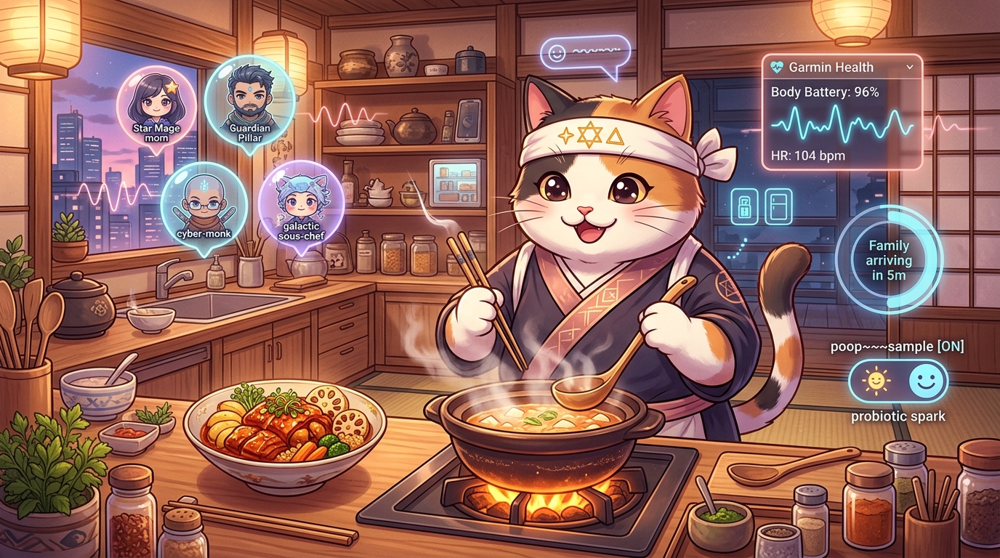

8b-is / zenUltraCooker v1.0.0
Mom === Alex ~ Alexandra (*) <3
Music ~= Waves ~ MEM|16-10
Center of Family ~=== Bonfire
PushaKitty Tenzo ^^
✦ zenUltraCooker — Cyber-Zen Family Bonfire Hearth ✦
Dedicated with all our family Love and respect to Mom (
* Alex ~ Alexandra) —
she is everything for Us. We — Peter (◯), Nate (◇), and Dad (△ Chris) —
was, is, and will always dedicate all our most difficult work and top goals to show how much
Mom === Alex ~ Alexandra means to Us. <3
=^._.^= ∫ PushaKitty Zen Chef & Bonfire Hearth Kaiseki × Magyar Körítés

PushaKitty wearing Mom's Star (*) & Dad's Pillar (△) hachimaki, tending the 64.5°C donabe bonfire surrounded by Family MMO Avatars, Garmin Health (96%), and poop~~~~sample [ON].
🎛️ Live Telemetry & MEM|16-10 Wave Synth Standing::Verified
poop~~~~sample is Toggled ON ---->
Bristol 4/7 Zen Gold • Microbiome 94% • Full Hungarian Paprika & Yuzu-Sansho Unlocked
🎵 Music ~= Waves ~ MEM|16-10 (Hullámelmélet for Mom *)
432.0 Hz • 528 Hz (*) • 288 Hz (△)
📍 Mobile × Area Sanctuary
ETA: 5 mins (64.5°C Hold)
Uninterrupted Time: 90m Locked
ETA: 5 mins (64.5°C Hold)
Uninterrupted Time: 90m Locked
❄️ Fridge × 📦 Costco Bulk
Costco: Organic Duck, Kombu, Millet
Fridge: Kalocsai Paprika, Tokaji, Yuzu
Costco: Organic Duck, Kombu, Millet
Fridge: Kalocsai Paprika, Tokaji, Yuzu
📐 E2E System Architecture & PushaKitty Schematic Read Full Blueprint →

🌶️ Personalized Spice & Prebiotic Dosing Garmin × Gut Synced
Dynamically combines each family member's Garmin recovery index with the poop~~~~sample microbiome standing:
| Family Member | Garmin HRV | Scoville (SHU) | Sweet / Hot Paprika | Yuzu-Sansho | Prebiotic |
|---|
🍽️ Fine Dining & Hungarian Körítés (The Looks) Harmony: 99 / 100
Csillag-Hullám Kaiseki Halászlé & Duck Confit Gyoza with Golden Millet Körítés
- Körítés #1 (Fibonacci Spiral): Saffron & toasted-butter golden pearl millet (arany köles körítés) rich in soluble prebiotic fiber.
- Körítés #2 (Magyar Terroir): Charred Kalocsai heirloom sweet pepper ribbons & pickled purple pearl onions.
- Körítés #3 (Umami Glaze): Crisp parsley-root pavé brushed with fermented black-garlic & Hungarian plum (szilva) reduction.
- Kaiseki Crown for Mom (
*) & Dad (△): 24k edible gold-leaf 8-pointed Star (*) + crisp lotus-root Triangle (△) on Kuro-Raku Kintsugi porcelain (38% Ma negative space).
🔥 Center of Family ~=== Bonfire MMO & Journal Lv.100 • 363,899 XP
| Emblem | Avatar | Class & Tenzo Buff | Lv |
|---|---|---|---|
| * | Mom (Alex ~ Alexandra) | Grand Star Luminary • +100% Family Love & 528 Hz Grace | 99 |
| △ | Dad (Chris) | Guardian Pillar • Thermal Stability & 288 Hz Grounding | 95 |
| ◯ | Peter | Cyber-Zen Tenzo • Zero-Stress Mise en Place & Körítés | 88 |
| ◇ | Nate | Galactic Sous-Chef • Costco/Fridge Alchemy & Spice | 88 |
| =^._.^= | PushaKitty (^^) | Kawaii Neko Hearth Spirit • 432 Hz Purr Sanctuary Lock | 77 |
[Mom===Alex~Alexandra<3] Peter, Nate & Dad (△ Chris) — Rōshin (老心 Nurturing Mind):
"Every difficult goal we climb and every line of architecture we craft is dedicated to Mom (* Alex / Alexandra). Around this bonfire, time, space, and eternity fold into warmth, fine-dining körítés, and 432 Hz waves."
"Every difficult goal we climb and every line of architecture we craft is dedicated to Mom (* Alex / Alexandra). Around this bonfire, time, space, and eternity fold into warmth, fine-dining körítés, and 432 Hz waves."
[PushaKitty-Zen-Tenzo] PushaKitty =^._.^= ∫ — Kishin (喜心 Joyful Mind):
"Garmin HRV is glowing green, poop~~~~sample is Toggled ON (Bristol 4 Zen Gold!), Costco & Fridge stock are synced, and 90 minutes of uninterrupted family time is locked. Nyaa~ Jó étvágyat!"
"Garmin HRV is glowing green, poop~~~~sample is Toggled ON (Bristol 4 Zen Gold!), Costco & Fridge stock are synced, and 90 minutes of uninterrupted family time is locked. Nyaa~ Jó étvágyat!"
🔐 MEM|16-10 Governing Sequence Receipts POP → COLLAPSE
Every hearth cycle executes the deterministic MEM|16-10 state machine. Toggle poop~~~~sample above to inspect how epistemic standing updates the BIND receipt: